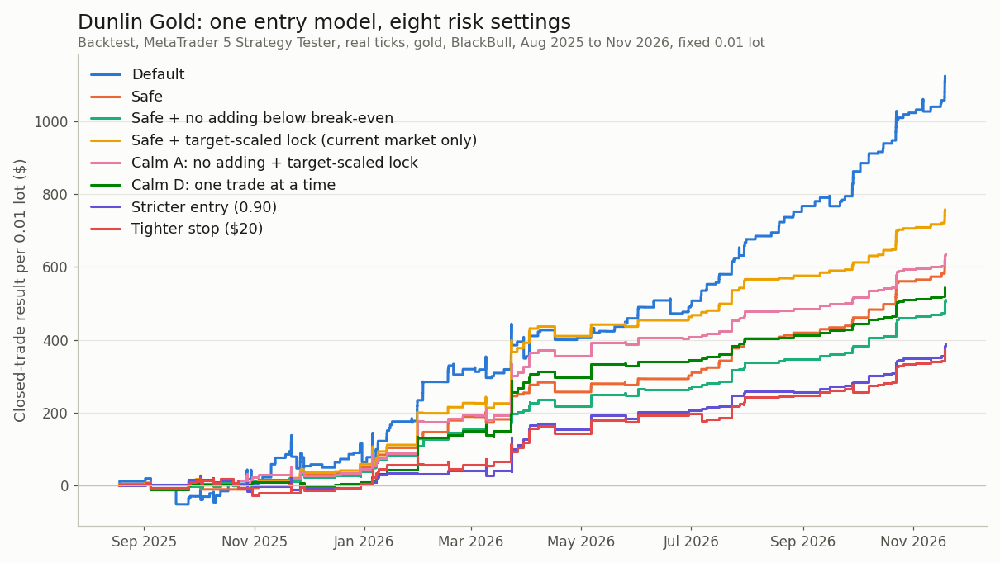

Dunlin Gold: eight risk settings, one entry model
Dunlin Gold uses a small neural network to decide when gold is in an orderly stretch with a lean to one side. That entry model is the same in every row below. What changes is how much risk each setting takes around it: how strict the entry is, how many trades may be open, where the stop sits and how profit is protected. We tested each setting the same way and drew them in one chart.

(Backtest, MetaTrader 5 Strategy Tester, real ticks, gold, BlackBull, August 2025 to November 2026, fixed 0.01 lot. The table also shows IC Markets and VT Markets over the same months.)
What each setting does
- Default: the validated configuration. Up to three trades on one side, a stop of at most $58 per 0.01 lot.
- Safe: only the network's most confident entries, at most two trades at once, stop at most $30.
- Safe + no adding below break-even: Safe, but no new trade while an open trade is still below its entry price.
- Safe + target-scaled lock: Safe, but profit is locked once a trade has covered 70 % of its own target, instead of at a fixed dollar amount.
- Calm A: Safe with both changes above.
- Calm D: Calm A with one trade at a time.
- Stricter entry (0.90) and Tighter stop ($20): Calm A with a stricter entry or a smaller stop.
The numbers
Per 0.01 lot, BlackBull / IC Markets / VT Markets.
| Setting | Result ($) | Profit factor | Largest dip ($) | Worst week ($) | Longest losing streak |
|---|---|---|---|---|---|
| Default | 1,125 / 1,588 / 1,218 | 2.2 / 2.8 / 2.3 | 95 / 75 / 90 | 39 / 39 / 39 | 4 / 3 / 4 |
| Safe | 623 / 823 / 651 | 3.6 / 4.0 / 3.6 | 51 / 51 / 51 | 26 / 26 / 26 | 4 |
| Safe + no adding below break-even | 510 / 692 / 530 | 3.1 / 3.5 / 3.1 | 31 / 35 / 31 | 16 / 16 / 16 | 2 |
| Safe + target-scaled lock | 758 / 829 / 749 | 4.1 / 4.0 / 4.0 | 51 / 51 / 51 | 26 / 26 / 26 | 4 |
| Calm A | 637 / 686 / 642 | 3.6 / 3.5 / 3.5 | 32 / 33 / 31 | 16 / 18 / 16 | 2 |
| Calm D (one trade at a time) | 544 / 613 / 552 | 3.8 / 3.7 / 3.7 | 32 / 33 / 31 | 20 / 18 / 16 | 1 |
| Stricter entry (0.90) | 389 / 373 / 360 | 2.7 / 2.7 / 2.6 | 41 / 51 / 47 | 16 / 12 / 12 | 2 |
| Tighter stop ($20) | 351 / 359 / 366 | 2.1 / 2.0 / 2.2 | 49 / 78 / 61 | 25 / 32 / 28 | 2-4 |
What we learned
- The biggest calm-down comes from not adding to a losing book. Safe's largest dip was a single afternoon with two trades open on the same side, both losing. Refusing the second trade while the first is under water cut the largest dip by about a third and the worst week from $26 to $16 on all three brokers.
- A tighter stop made things worse, not safer. With a $20 stop many more trades are stopped out, so the largest dip grew and recoveries took about three months instead of seven weeks.
- A stricter entry trades much less and earns about half, with long flat stretches.
- The target-scaled lock earned more at no extra risk in this period, because gold moved more than the old fixed lock allowed for. On older gold history replayed at today's price it gave some of that back, so we treat it as a setting for the current market, not as a safety feature.
- The early break-even is what protects every setting. Moving the stop to entry after a small favourable move is kept in all rows; moving it later multiplied full stops in our tests.
- The size of the worst single trade (about $30 per 0.01 lot with a $30 stop) only shrinks with the lot size. A smaller lot shrinks every number in the table by the same share, profit included.
Which setting to pick
- Calmest across many years: Safe with one trade at a time. On older gold history (2013 to 2024) replayed at today's price it lowered the largest dip in every group of years we tested and the worst week in most of them. It earns clearly less.
- Calmest in the current market: Safe with no adding below break-even (Calm A adds the target-scaled lock for the current market). It cuts the most pain in 2025 and 2026, but it did not hold in every older stretch.
- Smaller everything: any setting at a smaller lot. Every dollar figure in the table shrinks by the same share, profit included.
How much to trust it
- It is one period of about fifteen months on three brokers, chosen and judged after the fact; the settings were compared, not tuned trade by trade.
- On older gold history (2013 to 2024) replayed at today's price, one trade at a time lowered the largest dip in every group of years we tested and the worst week in most of them, at a clearly lower result. No adding below break-even lowered the largest dip in three of four groups but not in 2017 to 2021, so for a setting that holds across years we prefer one trade at a time.
- It is a backtest. It is not a live record and not a forecast.
Related: Dunlin Gold.